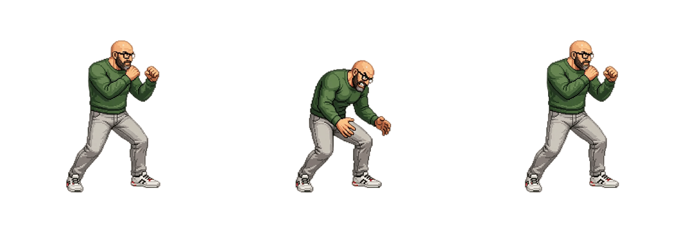
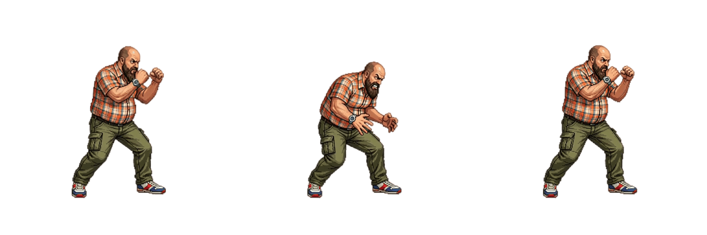
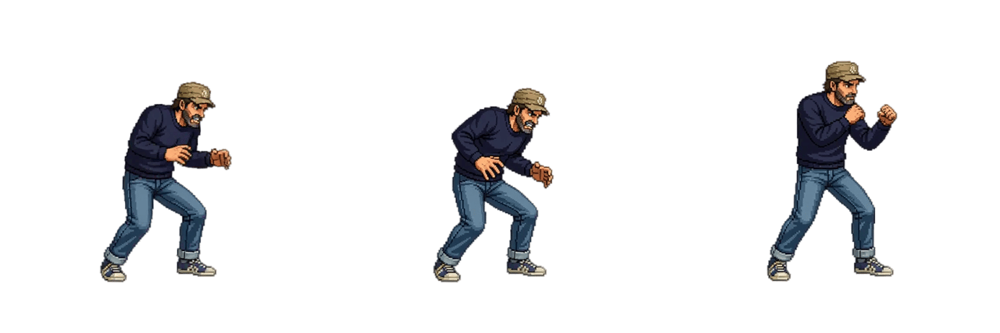
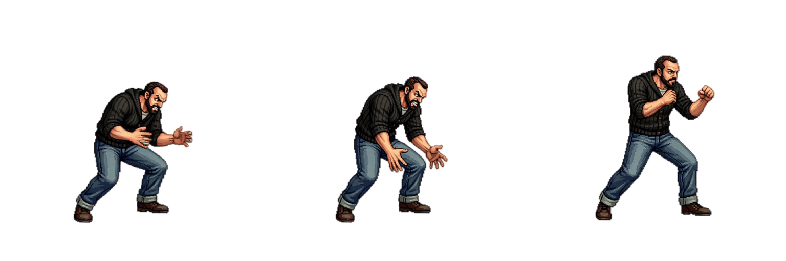
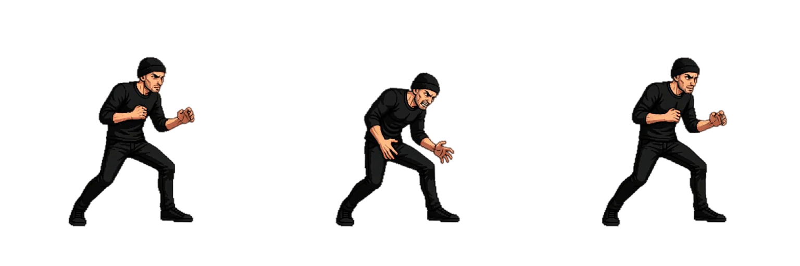
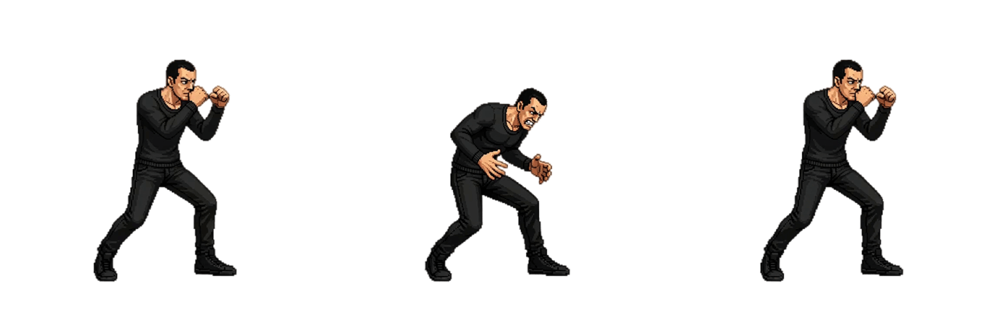
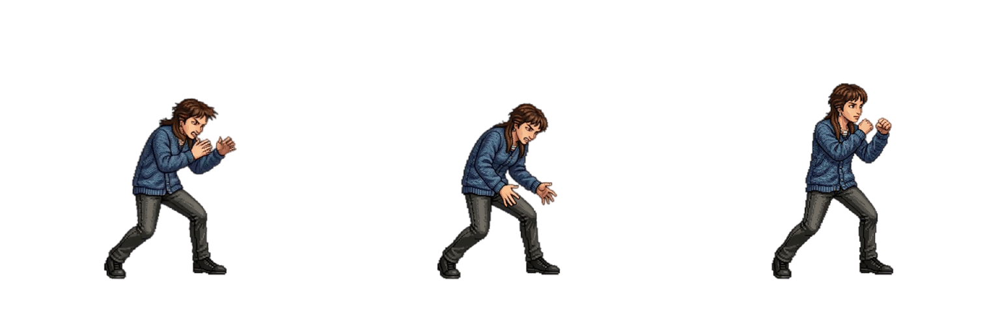
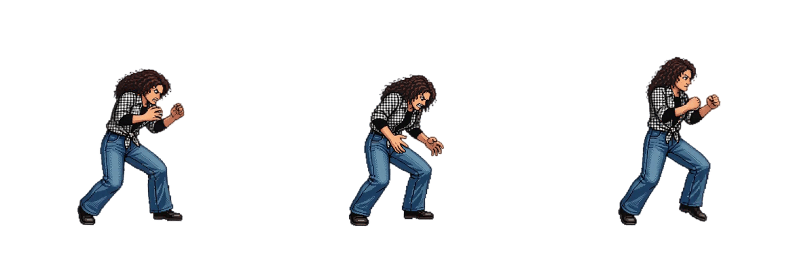
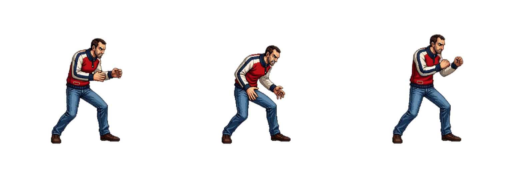

Apri Hurt medio nella demoTiming Hurt medio
Aggiornato il 2026-11-21. Nove personaggi; ogni animazione dura 500 ms (0,5 s) a velocita 1x. FPS e durata del singolo frame compensano il numero di celle di ciascun taglio.
Riproduzione solo avanti della reazione e del recupero presenti nello spritesheet. Le immagini mostrano inizio, meta e fine del taglio, senza indicare un impatto sincronizzato. Loop e CRT attivi nella demo. La posa di riferimento e la guardia in piedi.
Preferite le versioni trimmed salvate su AutoSprite. Indici sorgente da zero nello spritesheet selezionato; nessun offset dedotto dal parent. Pixel RGBA, dimensioni 512x512 e padding conservati senza ridimensionamenti. In Godot usare gli atlas e le durate per frame.
Scarica CSV
| Personaggio | Inizio / meta / fine | Intervallo / sorgente | Frame | FPS | Durata frame | Durata ciclo | Provenienza |
|---|
| ALBERTO |  | 0–11 / 12 | 12 | 24 | 41.667 ms | 500 ms | Hurt Medium
cmwq5r181005ag68gzfw3r9u7
Atlas |
|---|
| FABIO-CLARA |  | 0–18 / 19 | 19 | 38 | 26.316 ms | 500 ms | Hurt Medium
cmwq5yknz0009gbgpty6c7djy
Atlas |
|---|
| SBOZ |  | 0–19 / 20 | 20 | 40 | 25.000 ms | 500 ms | Hurt Medium
cmwq69o2x001i13sfp6wqr7yw
Atlas |
|---|
| PIPPO |  | 0–20 / 21 | 21 | 42 | 23.810 ms | 500 ms | Hurt Medium
cmwq68viv001sgbgphxdz28mx
Atlas |
|---|
| PEPPO |  | 0–19 / 20 | 20 | 40 | 25.000 ms | 500 ms | Hurt Medium
cmwq64r3800cebxbl2e4be8aj
Atlas |
|---|
| Oscar |  | 0–10 / 11 | 11 | 22 | 45.455 ms | 500 ms | Hurt Medium
cmwq4st5o002pzhmpcw4u8am5
Atlas |
|---|
| Elisa |  | 0–14 / 15 | 15 | 30 | 33.333 ms | 500 ms | Hurt Medium
cmwq5vopg00axbxbliwxqidxn
Atlas |
|---|
| FRA-TAVARONE |  | 0–15 / 16 | 16 | 32 | 31.250 ms | 500 ms | Hurt Medium
cmwq60ycc00b2ayq4raxo74xi
Atlas |
|---|
| MARSAN |  | 0–14 / 15 | 15 | 30 | 33.333 ms | 500 ms | Hurt Medium
cmwq6302i00c7ayq4h2si1p5n
Atlas |
|---|